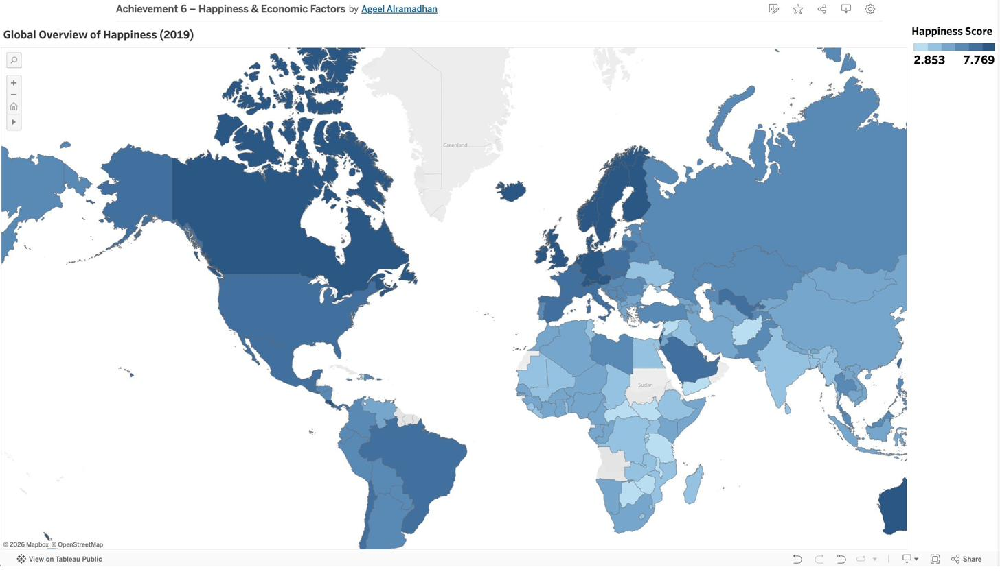

Globales Glück & Wirtschaftsfaktoren (2019)
Python · Pandas · Scipy · Matplotlib · Tableau · KorrelationsanalyseProjektübersicht
Dieses Projekt untersucht anhand des World Happiness Report 2019, was das berichtete Glück in verschiedenen Ländern antreibt — mit Fokus auf wirtschaftliche und soziale Indikatoren und deren Beziehung zu Glückswerten.
Zentrale Frage
Ist das BIP der wichtigste Treiber nationalen Glücks — oder spielen soziale Faktoren eine ebenso wichtige oder stärkere Rolle? Die Antwort hat reale Implikationen für die politische Prioritätensetzung.
Methoden
- Explorative Datenanalyse (EDA) in Python — Verteilungen, Ausreißer, fehlende Werte
- Streudiagramme zur Bewertung von Beziehungen zwischen Glück und Indikatoren
- Pearson-Korrelationsanalyse zur Quantifizierung der Beziehungsstärke
- Lineare Regression zur Trenduntersuchung
- Tableau für interaktive Weltkarte und Streudiagramme
Zentrale Erkenntnisse
- BIP pro Kopf zeigt eine klare positive Beziehung zum Glück
- Soziale Unterstützung zeigte eine stärkere und konsistentere Beziehung als das BIP
- Länder mit ähnlichem Einkommensniveau unterschieden sich erheblich im Glück, wenn die soziale Unterstützung variierte
- Wirtschaftliche Faktoren allein reichen nicht aus, um Wohlbefinden zu erklären
Globale Glücksübersicht

Fazit
Wirtschaftlicher Wohlstand ist wichtig für Glück, aber nicht ausreichend. Soziale Unterstützung — Menschen zu haben, auf die man sich verlassen kann — zeigt eine ebenso starke oder stärkere Beziehung zum berichteten Wohlbefinden. Effektive Politik muss daher sowohl wirtschaftliche als auch soziale Dimensionen adressieren.